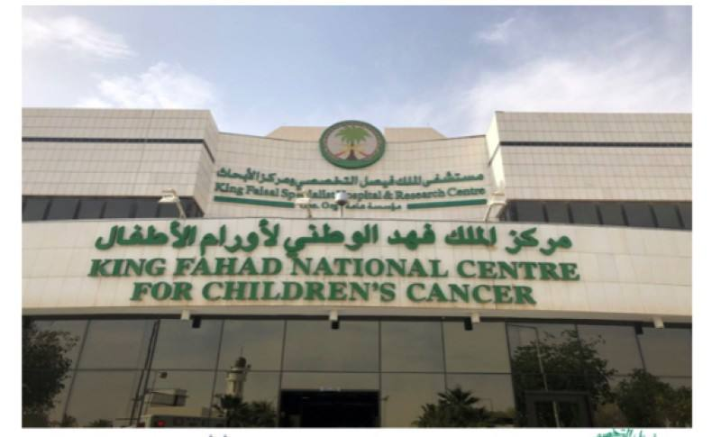
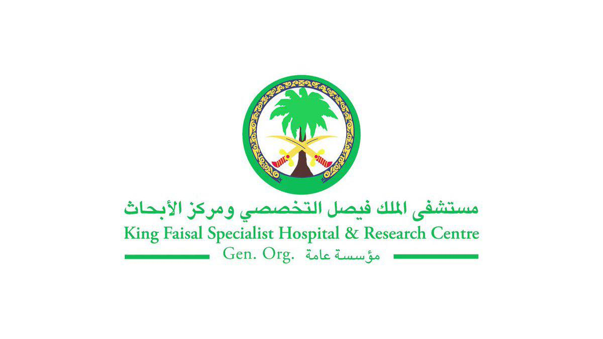
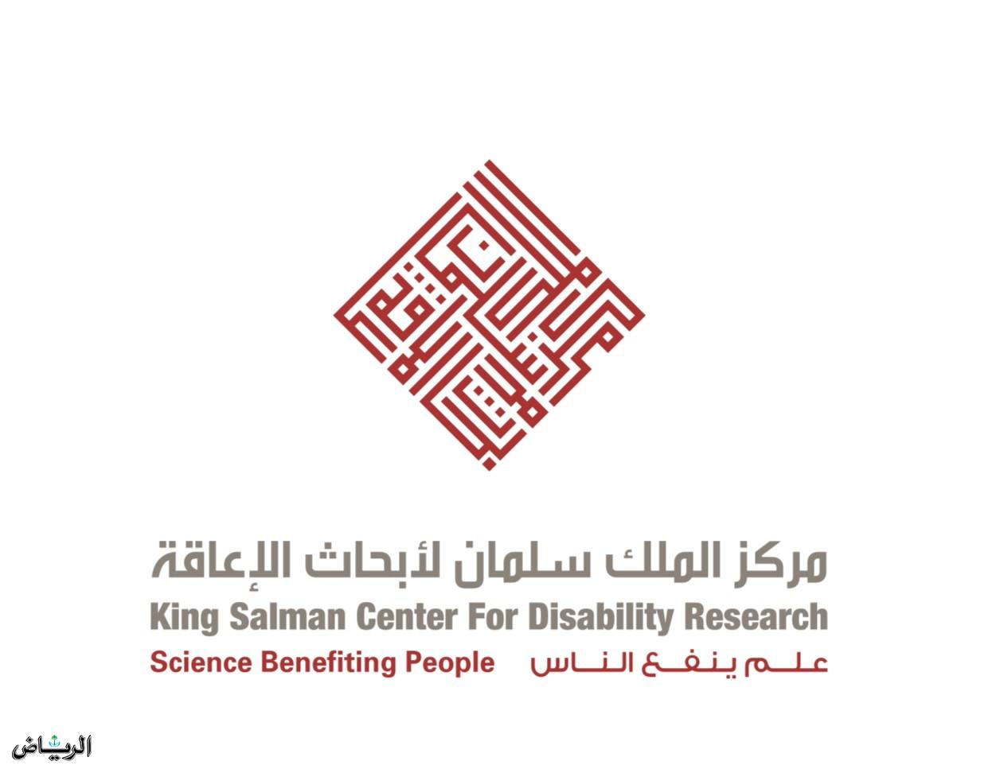

مركز الملك فهد الوطني لأبحاث السرطان

يستخدم المركز الذكاء الاصطناعي لتطوير أدوات جديدة للكشف عن السرطان
المبكر وتشخيصه وعلاجه
على سبيل المثال، طور المركز نظاما قائما على الذكاء الاصطناعي يمكنه تحليل صور الأشعة المقطعية للصدر للكشف عن سرطان الرئة في مراحله المبكرة.
على سبيل المثال، طور المركز نظاما قائما على الذكاء الاصطناعي يمكنه تحليل صور الأشعة المقطعية للصدر للكشف عن سرطان الرئة في مراحله المبكرة.
مستشفى الملك فيصل التخصصي ومركز الأبحاث

يستخدم المستشفى الذكاء الاصطناعي لتطوير أدوات جديدة لتحسين دقة وتكلفة
التصوير الطبي.
على سبيل المثال، طور المستشفى نظاما قائما على الذكاء الاصطناعي يمكنه تقليل جرعة الإشعاع المستخدمة في فحوصات الأشعة المقطعية دون المساس بجودة الصور.
على سبيل المثال، طور المستشفى نظاما قائما على الذكاء الاصطناعي يمكنه تقليل جرعة الإشعاع المستخدمة في فحوصات الأشعة المقطعية دون المساس بجودة الصور.
مركز الملك سلمان لأبحاث الإعاقة

يعمل المركز على تطوير عدد من المشاريع البحثية المتعلقة بالذكاء
الاصطناعي في مجال الراديولوجيا، بما في ذلك تطوير نظام قائم
على الذكاء الاصطناعي يمكنه تشخيص إعاقات النطق واللغة من
صور الأشعة
المقطعية للدماغ.